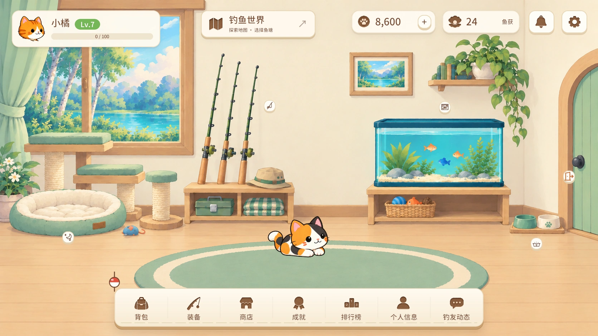
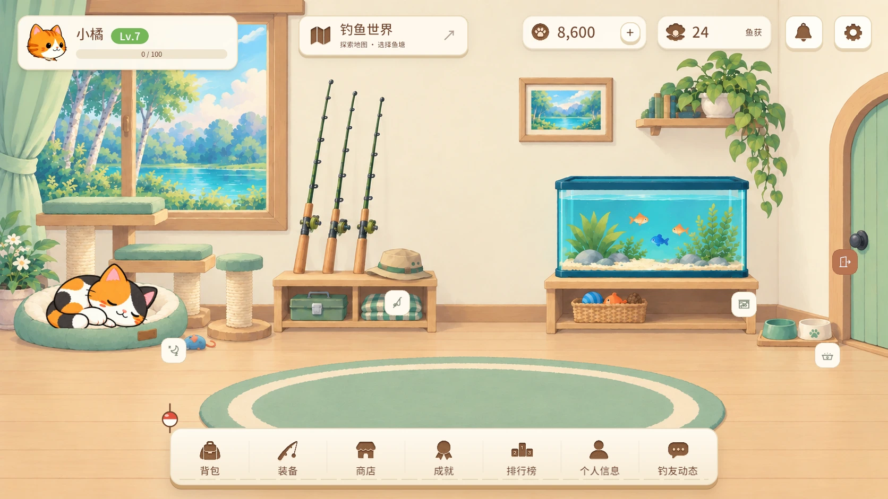

尺寸与留白
家园图标标签 48 × 48 px
家园图标 24 × 24 px，无常驻文字
左右移动 44 × 44 DIP
离开鱼塘 112 × 40 DIP，热区高 44 DIP
打窝标记 38 × 38 DIP，热区 44 × 44 DIP
猫咪钓鱼手账 / 交互设计
奶油色标签、陶土色主按钮与简洁线描，延续当前房间的柔和画风。
平时只显示图标，悬停或聚焦时提示用途。
只调整五个家园入口沿用现有完整主界面，顶部栏与底部导航保留原有样式和操作。
图标与状态提示小标签不显示常驻文字；睡眠、进食用状态圆点，悬停查看用途。
Overlay 使用已认可方案对应左右移动、离开和打窝控件单独展示。
五个图标入口已接入。主界面中的猫咪可全屏拖动，靠近边缘时保留完整体型。


移动轻一点，离开说清楚；打窝的操作与效果分开表达。

当前窝料 12 / 50
剩余时间 12:48
叠加数量与剩余时间分别展示。收好钓具，带上今天的收获。
左右箭头 44 × 44贴边居中，悬停展示“向左看 / 向右看”，到达边界淡出禁用。
离开用完整语义门与向外箭头，保留文字；确认后收竿回家。
打窝标记不抢鱼讯窝料袋 + 颗粒 + 水纹，鼠标悬停或点击才展开详情。
20–24 px 线描图标，图文间距 8 px，44 px 起的点击区域。
状态由图形、文字和数量共同区分。绿色表示效果生效，陶土色表示正在投料；环形缺口只表示投料过程，不表示窝料层数。
家园图标标签 48 × 48 px
家园图标 24 × 24 px，无常驻文字
左右移动 44 × 44 DIP
离开鱼塘 112 × 40 DIP，热区高 44 DIP
打窝标记 38 × 38 DIP，热区 44 × 44 DIP
悬停 120 ms 底色淡变
按下下移 1 px，不缩放弹跳
键盘聚焦显示 2 px 外环
减少动效时关闭循环与位移动效
弹层支持 Escape 关闭
家具拖动时暂隐标签，松手后跟随家具
打开手账时家园标签统一隐藏
Overlay 仅热区拦截鼠标，其余区域穿透
钓鱼进行中，“离开”先确认再收竿
本页为交互提案，使用演示状态
交互示意